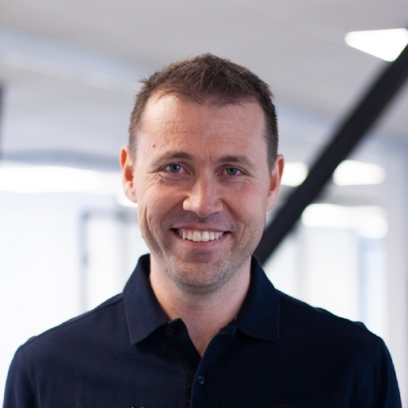
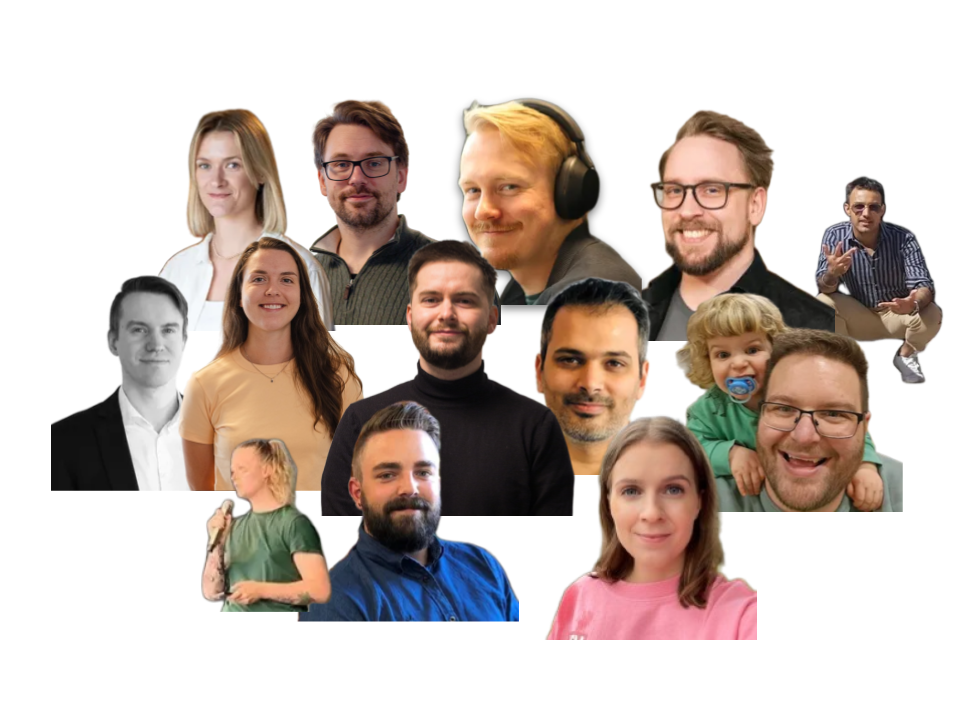

Ett Team
12 sjefer
Anarki eller autonomi?

Jan-Tore Holen
Gründer og CEO i Conta Group

Sølve Monteiro
1/12 Team Lead, Anarkist
Lokaleid, hovedkvarter i Ålesund
10 land
5 kontinent
- Steve Jobs
Bygg et nytt regnskapssystem for proffmarkedet

Hva skal vi lage?
Hvordan skal vi lage det?
Hvem lager vi det for?
...
Øremedisin i rumpa
üçë
og følger ordre
uten å bli fortalt hva vi skal gjøre?
Felles eierskap til
prosjektet
produktet
teamet
Par- og Mobprogramming
push direkte til prod ü§Ø
fra idé til prod på 30 min
uten voksne?
vi lager mye rot
men vi lærer fort
og vi har det gøy
üí°kreativeüí°


(nesten ekte sitat)
Kultur er mer enn bordtennisbord
Kultur bygges med tillit
av alle
hver dag
forandre verden?